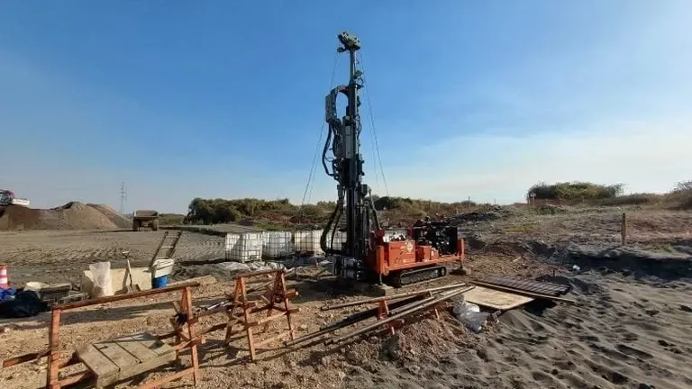

Our Dundee office provides comprehensive geotechnical services tailored to the unique conditions of Tayside and the wider region. From initial site characterization through to foundation design and construction monitoring, we offer integrated solutions that ensure project safety and compliance. We combine consolidated regional experience with calibrated equipment and code-compliant reporting to support developments ranging from city-centre infill to brownfield regeneration along the Tay estuary. Our approach integrates subsurface investigation with practical engineering, including shallow foundation design for the area's varied geology.

Process overview
Local context
Our team brings extensive hands-on experience across Dundee and the wider Tayside region, having delivered numerous investigations for residential, commercial, and infrastructure projects. We maintain a calibrated laboratory and In-Situ equipment, ensuring high-quality data for every assignment. Our geotechnical engineers are chartered and work closely with local contractors, planning authorities, and statutory bodies to navigate the specific requirements of Scottish building standards and environmental regulations. This local knowledge, combined with rigorous technical oversight, allows us to provide reliable, cost-effective solutions tailored to the area's distinct ground conditions.
Visual overview
Reference standards
All our work in Dundee adheres to the British Standards, primarily BS 5930:2015 for site investigation and BS EN 1997-1:2004 (Eurocode 7) for geotechnical design, together with its UK National Annex. We also follow the relevant Eurocodes for structural design (BS EN 1990, BS EN 1992, etc.). For specific field and laboratory tests, we reference standards such as BS 1377 for soil testing and BS EN ISO 22476 for In-Situ (e.g., SPT). Our reporting is fully compliant with the requirements of the Building Regulations (England and Wales) and equivalent Scottish Technical Standards.
Quick answers
What are the main ground-related risks for developments in Dundee city centre?
Dundee city centre development often faces risks from the deep, soft alluvial deposits along the Tay waterfront, which can lead to excessive settlement and instability if not properly addressed. Made ground from historical industrial activity is also common, requiring careful contamination and geotechnical assessment. High groundwater levels necessitate solid dewatering and waterproofing strategies. Our local experience allows us to identify and mitigate these risks early.
How does the geology of the Dundee waterfront affect foundation design?
The waterfront is underlain by thick sequences of soft alluvial silts and clays, which have low bearing capacity and high compressibility. This often requires deep foundation solutions such as piles or Improvement techniques like vibrocompaction or preloading with vertical drains. Shallow foundations are generally unsuitable unless the bearing stratum of glacial till or bedrock is close to the surface. A detailed site investigation is essential.
What geotechnical standards must be followed for projects in Scotland?
Projects in Scotland must comply with the Scottish Building Standards, which reference Eurocode 7 (BS EN 1997-1) for geotechnical design and BS 5930 for site investigation. Additionally, the Technical Handbooks (Domestic and Non-Domestic) provide specific guidance. All geotechnical reporting must be prepared by a suitably qualified and experienced engineer and submitted to the local authority building control as part of the warrant application.
Do I need a separate geotechnical investigation for a small housing development in Dundee?
Yes, even for small housing developments, a geotechnical investigation is strongly recommended and often required by the local authority to satisfy building warrant conditions. The variable nature of glacial till and the presence of soft alluvial soils in parts of Dundee mean that ground conditions can change significantly over a short distance. A targeted investigation will identify any risks of differential settlement, high groundwater, or poor bearing capacity, saving costs in the long run.